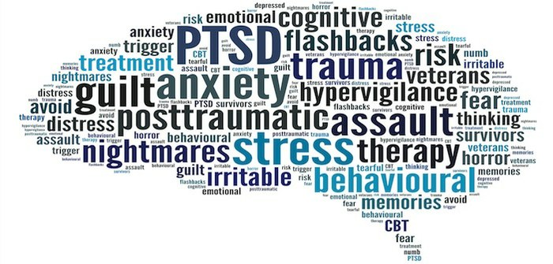
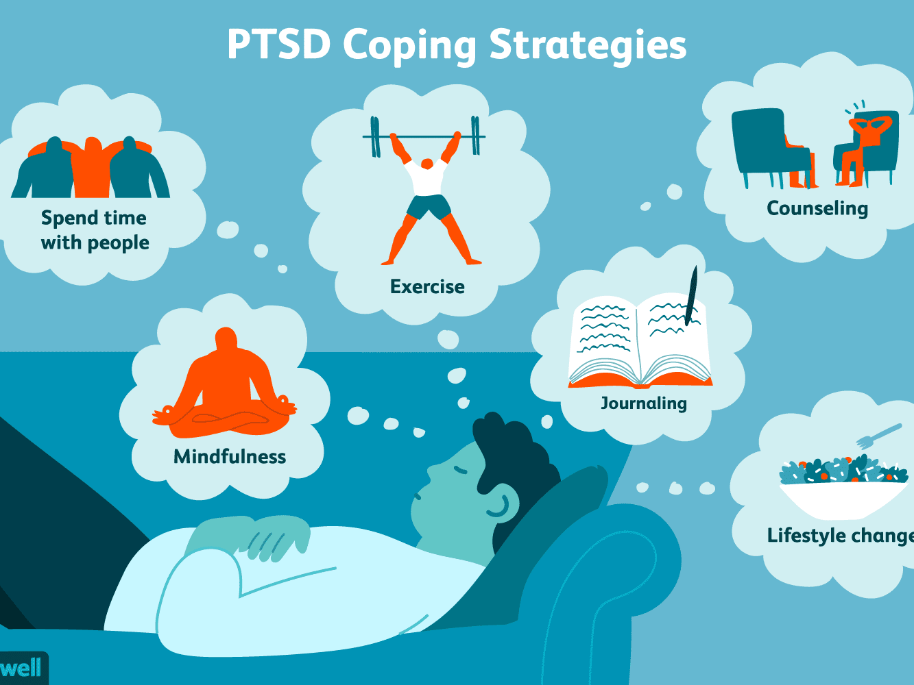
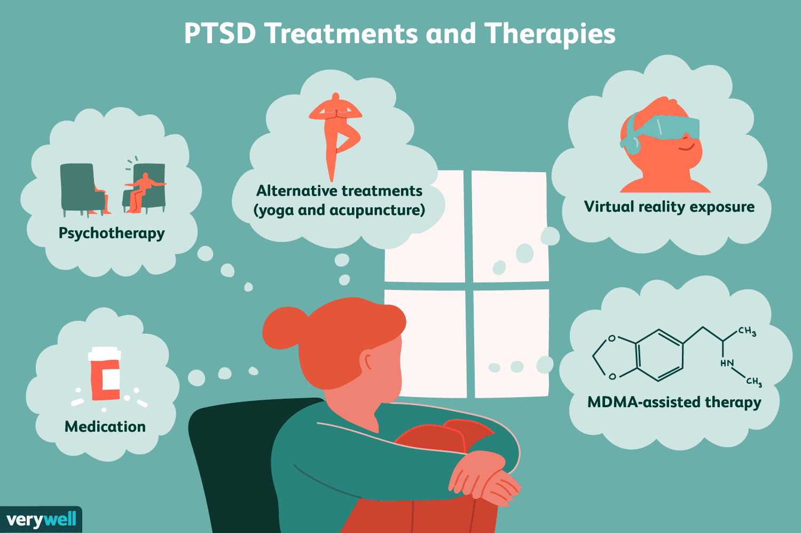

Post-traumatic stress disorder (PTSD)
A mental health condition that's triggered by a terrifying event — either experiencing it or witnessing it.
Normal Stress Response
Normal stress response is what occurs before PTSD begins. However, it does not always lead up to the full-blown disorder. Events like accidents, injuries, illnesses, surgeries and other sources of unreasonable amounts of tension and stress can all lead
to this response. Typically, normal stress response can be effectively managed with the support of loved ones, peers and individual or group therapy sessions. Individuals suffering from normal stress response should see a recovery within a
few weeks.
Acute Stress Disorder
Acute stress disorder, while not the same as PTSD, can occur in people who have been exposed to what is or what feels like a life-threatening event. Natural disasters, loss of loved ones, loss of a job or risk of death are all stressors that can trigger
acute stress disorder. If left untreated, acute stress disorder may actually develop into PTSD. Acute stress disorder can be treated through individual and group therapy, medication and intensive treatments designed by a psychiatrist.
Uncomplicated PTSD
Uncomplicated PTSD is linked to one major traumatic event, versus multiple events, and is the easiest form of PTSD to treat. Symptoms of uncomplicated PTSD include: avoidance of trauma reminders, nightmares, flashbacks to the event, irritability, mood
changes and changes in relationships. Uncomplicated PTSD can be treated through therapy, medication or a combination of both.
Complex PTSD
Complex PTSD is the opposite of uncomplicated PTSD. It is caused by multiple traumatic events, not just one. Complex PTSD is common in abuse or domestic violence cases, repeated exposure to war or community violence, or sudden loss. While they share the
same symptoms, treatment of complex PTSD is a little more intense than uncomplicated PTSD. Individuals with complex PTSD can be diagnosed with borderline or antisocial personality disorder or dissociative disorders. They exhibit behavioral
issues, such as impulsivity, aggression, substance abuse or sexual impulsivity. They can also exhibit extreme emotional issues, such as intense rage, depression or panic.
Comorbid PTSD
Comorbid PTSD is a blanket term for co-occurring disorders. It is applied when a person has more than one mental health concern, often coupled with substance abuse issues. Comorbid PTSD is extremely common, as many people suffer from more than one condition
at a time. Best results are achieved when both the commingling mental health condition and the comorbid PTSD are treated at the same time. Many people who suffer from PTSD try to treat it on their own. This can include self-medication and
other destructive behaviors. Using drugs or alcohol as a way to numb the pain will only make things worse and prolong treatment.
Test Yourself
SYMPTOMS
Have you ever felt you should Cut down your use?
Have you ever been Annoyed when people have commented on your use?
Have you ever felt Guilty or badly about your use?
Have you ever used drugs to Ease withdrawal symptoms, or to avoid feeling low after using?

SOLUTION

